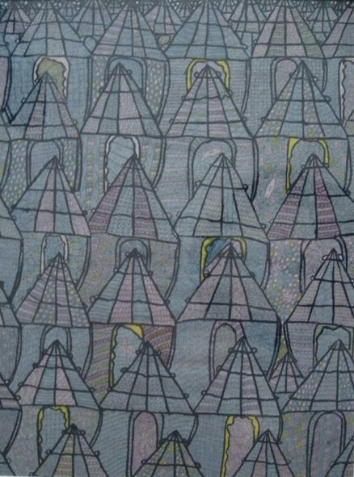

Zacheus O. Oloruntoba
1919–2014
Artist Biography
Zacheus O. Oloruntoba was a Yoruba chieftain, practicing tribal shaman, recognized clairvoyant, and a consultant in herbal medicine at Georgetown University. Oloruntoba is recognized as one of Nigeria’s most significant artists. Chief Oloruntoba began painting in his teenage years as a way of processing and recording lucid and apparently clairvoyant dreams that he experienced since late childhood and which earned him international fame. His artwork is an integral part of his work as a healer and his works are created to be actively therapeutic. His work has been exhibited by the Museum of Modern Art, New York, and is in the collections of Queen Elizabeth II, David Rockefeller, Mohammed Ali, Ornette Coleman and Ambassador Andrew Young.
Gerard A Houghton writes: “Besides the obvious representation of reality, an Oloruntoba painting, may however have other functions not included in that particularly western notion. Many are designed with specific purposes in mind: protecting the possessor, warding off malign influences, emblems of good luck or even as curative of specific ailments or weaknesses. Here, the African artist Chief Oloruntoba assumes a higher role than his western counterpart; that of medicine man and tribal shaman. For Oloruntoba, each painting is created in response to a specific question, need or problem and contains its own active spirit. Thus works with titles such as For Harmony, Protection Against Jealousy, and Against Sickness are objects to bring down power and invoke the powerful protection of positive forces from the other side. It is for this reason that such paintings are created with vegetable dyes made from herbs and the roots of traditional plants, their curative effects being dependent both upon the distinctive colours resulting and upon their inherent herbal properties.”

Untitled, 1972